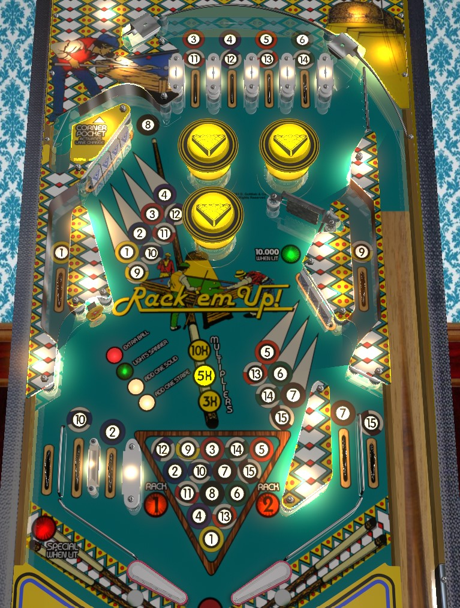

Complete three sets of drop targets as quickly as possible to advance the bonus multiplier to 10x, then collect flashing pool balls from around the table. The spinner changes which pool balls are available to collect at any given time and is effectively random. Bumpers and slingshots change the value of the lower left standup target between spotting a ball, lighting the spinner for 10,000 per spin for one rip (very valuable), or an extra ball very rarely. Lane change is only available at the top lanes at the start of a ball in play or immediately after using the 8-Ball kicker.
The main goal of Rack 'em Up! is to collect all of the pool balls numbered 1-15. Each player is working to collect every pool ball, unlike Bally's Eight Ball series of games where odd numbered players work on solids and even numbered players work on stripes. Every pool ball except for the 8 ball can be collected in two locations.
The four top lanes are 3/11, 4/12, 5/13, 6/14. The drop target 4-bank is 1/9, 2/10, 3/11, 4/12. The drop target 3-bank is 5/13, 6/14, 7/15. 1 and 9 can also be collected from the upper side lanes. 10 and 2 can be collected from the two left in lanes. 7 and 15 can be collected from the right in lane and out lane respectively.
At any given time, 4 of the 14 solid/stripe pool balls will be lit or flashing. A flashing pool ball is eligible to be collected. A lit pool ball has already been collected. If both of the pool balls corresponding to a top lane or drop target are flashing, they will both be collected with the same shot. Collecting a pool ball scores 5,000 points. Any pool ball target or rollover that is not flashing to collect a ball scores 500 points. Each spin of the spinner shuffles which 4 pool balls are lit or flashing, in the following sequence:
The 8 ball will never be lit until all 14 other pool balls have been collected, and the 8 ball can only be collected at the Corner Pocket kicker lane, whose entrance is above-left of the bumpers. Completing a rack lights the left out lane for special. Up to two completed racks can be scored for the purposes of end-of-ball bonus, which is worth 1,000 points per pool ball collected over the course of the game times bonus multiplier.
"Lane change" is available at the right flipper only, but only at the start of a ball in play or immediately after the Corner Pocket kicker is used. Pressing the right flipper for "lane change" will rotate the currently lit set of pool balls by one position, just as though the spinner had registered one hit.
Pop bumpers score 1,000 points in a 3-ball game or 100 points in a 5-ball game. Slingshots score 10 points. There are actually two slingshots; the left slingshot is situated above the left in lanes. Any hit to a pop bumper or slingshot rotates the currently lit award at the lower left standup target. This target always scores 3,000 points, and depending on what is lit, it will also spot a Solids ball, spot a Stripes ball, or light the spinner. After 6 rotations of those three awards, the standup target will be lit for extra ball instead, meaning the extra ball is available 1/19th of the time. Trying to spot a Solids ball when 1-7 have already been collected, or same with Stripes when 9-15 are collected, does nothing.
The spinner scores 1,000 points and rotates which pool balls are lit on each spin. Receiving the Light Spinner award from the lower left standup target will do just that; lit spinner is worth 10,000 points per spin. This can easily be the most valuable single shot in the game at 200,000 points or more if you make a strong, direct shot to the lit spinner. Once the spinner is lit, it will stay lit until the end of the ball or until it is hit; after the lit spinner registers at least one spin, it will unlight once it comes to a complete stop, at which point it must be lit again from a lower left standup target award.
Rack 'em Up! has an almost-conventional in/out lane setup; the right side is standard, but the left side has a second in lane in place of the slingshot, and the slingshot itself is positioned further up the playfield. From right to left: the right out lane scores the 15 ball, the right in lane scores the 7 ball, the near left in lane scores the 2 ball, and the far left in lane scores the 10 ball. These lanes all score 5,000 points if their pool ball is flashing and 500 points otherwise. The left out lane scores 10,000 points, and can be lit for Special by completing a rack.
Base bonus is counted as 1,000 points per pool ball collected over the course of the game. Up to two completed racks are held in memory, so the max base bonus is 44 pool balls = 44,000 points. Completing either bank of drop targets increases the bonus multiplier in the sequence 3x-5x-10x, for a max total bonus of 440,000 points. Base bonus (number of pool balls collected) is always held over from ball to ball, but bonus multiplier is not. There is no mid-ball bonus collect.
Bonus multiplier is easy enough to build up that getting to 10x should always be a quick first priority; after that, pivot to collecting pool balls or shooting lit spinners as they are available.
I believe that in competition/novelty play, extra balls and specials both score 50,000 points.